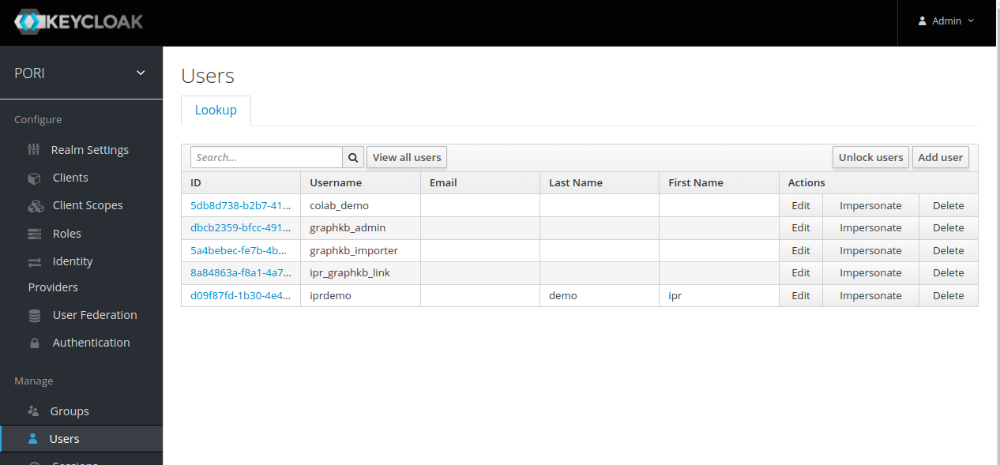

Install with Docker¶
Since PORI is a production-ready, institution-level, scalable platform, the simplest way to get the entire platform up and running from scratch is using docker. For simplicity the default instructions set up the platform with http.
Most of the servers are auto-started together with docker-compose but the keycloak container must be started and configured on its own first.
Start by cloning this repository which contains the default docker compose configs (docker-compose.yml and docker-compose.dev.yml)
git clone https://github.com/bcgsc/pori.git
cd pori
For working on most of the PORI-related projects you will need to have a number of the components set up. For example, to work on the GraphKB API you will need both an OrientDB server and a Keycloak server already running.
If your institution regularly works on PORI related projects then we recommend setting up a development instance of the PORI platform which your developers can point their applications to. If you do not have access to something like this, then the easiest way to get the dependencies for whatever part of the PORI platform you are working on up and running is by running the development version of the docker compose configuration found in this repository: docker-compose.dev.yml.
# This version of the docker-compose sets up the servers using http only for testing locally and
# therefore does not require the top level apache server to configure the URLs
version: '3'
services:
keycloak:
build:
context: .
dockerfile: ./demo/Dockerfile.auth
environment:
KEYCLOAK_USER: admin
KEYCLOAK_PASSWORD: admin
PROXY_ADDRESS_FORWARDING: "true"
JAVA_OPTS_APPEND: "-Djboss.socket.binding.port-offset=808"
ports:
- 8888:8888
networks:
- app-network
healthcheck:
# test fetching public key from PORI realm
test: ["CMD", "bash", "/scripts/kc_setup_keyfile.sh", "http://localhost:8888/auth", "admin", "admin", "PORI", "/keys/keycloak.key"]
interval: 45s
timeout: 10s
retries: 5
volumes:
- source: ./keys
target: /keys
type: bind
graphkb_db:
image: orientdb:3.0
environment:
# customize settings below
ORIENTDB_ROOT_PASSWORD: root
ports:
- 2424:2424
- 2480:2480
networks:
- app-network
volumes:
- source: ./databases/orientdb/data
target: /orientdb/databases
type: bind
- source: ./databases/orientdb/backup
target: /orientdb/backup
type: bind
graphkb_api:
image: bcgsc/pori-graphkb-api:latest
ports:
- 8080:8080
environment:
GKB_DB_CREATE: 1
GKB_DB_HOST: graphkb_db
GKB_DB_NAME: graphkb
GKB_KEYCLOAK_KEY_FILE: /keys/keycloak.key
KEY_PASSPHRASE: ''
# customize settings below
GKB_CORS_ORIGIN: '^.*$$'
GKB_DBS_PASS: root
GKB_KEYCLOAK_URI: http://keycloak:8888/auth/realms/PORI/protocol/openid-connect/token
depends_on:
- graphkb_db
- keycloak
networks:
- app-network
restart: always
volumes:
- source: ./keys
target: /keys
type: bind
read_only: true
healthcheck:
test: ["CMD", "curl", "-f", "http://graphkb_api:8080/api/version"]
interval: 30s
timeout: 10s
retries: 5
graphkb_client:
image: bcgsc/pori-graphkb-client:latest
environment:
KEYCLOAK_REALM: PORI
KEYCLOAK_CLIENT_ID: GraphKB
# customize settings below
API_BASE_URL: http://localhost:8080
KEYCLOAK_URL: http://localhost:8888/auth
PUBLIC_PATH: /
ports:
- 5000:80
depends_on:
- graphkb_api
networks:
- app-network
restart: always
ipr_db:
image: bcgsc/pori-ipr-demodb:latest
restart: always
environment:
DATABASE_NAME: ipr_demo
POSTGRES_USER: postgres
READONLY_USER: ipr_ro
SERVICE_USER: ipr_service
PGDATA: /var/lib/postgresql/data/pgdata
# customize settings below
POSTGRES_PASSWORD: root
READONLY_PASSWORD: root
SERVICE_PASSWORD: root
ports:
- 5432:5432
networks:
- app-network
healthcheck:
test: ["CMD-SHELL", "pg_isready"]
interval: 10s
timeout: 5s
retries: 5
redis:
image: redis:6.2-alpine
# Set health checks to wait until redis has started
healthcheck:
test: redis-cli ping
interval: 10s
timeout: 5s
retries: 5
ports:
# Maps port 6379 on service container to the host
- 6379:6379
networks:
- app-network
restart: always
ipr_api:
image: bcgsc/pori-ipr-api:latest
command: npm start
ports:
- 8081:8080
environment:
IPR_DATABASE_HOSTNAME: ipr_db
IPR_DATABASE_NAME: ipr_demo
IPR_DATABASE_USERNAME: ipr_ro
IPR_GRAPHKB_USERNAME: ipr_graphkb_link
IPR_KEYCLOAK_KEYFILE: /keys/keycloak.key
# customize settings below
IPR_DATABASE_PASSWORD: root
IPR_GRAPHKB_PASSWORD: ipr_graphkb_link
IPR_GRAPHKB_URI: http://graphkb_api:8080/api
IPR_KEYCLOAK_URI: http://keycloak:8888/auth/realms/PORI/protocol/openid-connect/token
IPR_REDIS_HOST: redis
IPR_REDIS_PORT: 6379
depends_on:
- ipr_db
- redis
- keycloak
networks:
- app-network
restart: always
volumes:
- source: ./keys
target: /keys
type: bind
read_only: true
healthcheck:
test: ["CMD", "curl", "-f", "http://ipr_api:8080/api/spec.json"]
interval: 30s
timeout: 10s
retries: 5
ipr_client:
image: bcgsc/pori-ipr-client:latest
environment:
KEYCLOAK_REALM: PORI
# customize settings below
API_BASE_URL: http://localhost:8081/api
GRAPHKB_URL: http://localhost:5000
KEYCLOAK_URL: http://localhost:8888/auth
PUBLIC_PATH: /
ports:
- 3000:80
depends_on:
- ipr_api
networks:
- app-network
restart: always
networks:
app-network:
driver: bridge
The demo uses a default keycloak setup with a realm "PORI" and two clients: "GraphKB" and "IPR". For convenience there are also a number of default users which all have the default password of "secret".
| Name | Default in DB | Purpose |
|---|---|---|
| graphkb_importer | GraphKB | This is the default user that is created when the new GraphKB DB is created. It is an admin user that can be used to add new users or import content |
| ipr_graphkb_link | GraphKB | This is the user used by IPR to pull data from GraphKB |
| iprdemo | IPR | This is an admin user in the IPR demo db |
| graphkb_admin | GraphKB | Admin user for managing content/users in the GraphKB web interface |

Run docker-compose¶
The first thing you should do is create new/empty directories for the data stored by GraphKB and IPR.
mkdir -p databases/{postgres,orientdb}/{backup,data}
You should also create a new directory for storing the public key from keycloak. This key will be downloaded and store so that it was be used in checking incoming tokens by the GraphKB and IPR APIs. If this directory already exists you should delete and remake it.
mkdir keys
Next, use docker-compose to start the DB, API, and client servers. The paths/URLs in the docker-compose.yml file should be adjusted to match your deployment. In our demo deployment we have a proxy pass set up from the configured ports to handle the https layer
docker-compose -f docker-compose.dev.yml up -d
This will start the following services
- Postgres db server for IPR with a default db dump
- OrientDB server for GraphKB with an empty default db
- GraphKB API server (nodejs)
- IPR API server (nodejs)
- GraphKB client server (nginx)
- IPR client server (nginx)
- Keycloak Authentication server
Once the platform is live you can populate the new GraphKB instance with external content using the loaders.
It will take a minute or two for all of the servers to start. You can check how they look with docker
docker ps
If any of them show "(health: starting)" then they are not ready yet.
Viewing Log Files¶
Sometimes you will need to check the logs from the various servers, this can be done with the docker logs command. First find the container ID (or name) by listing all the running containers with docker ps and then run the following
docker logs <CONTAINER ID>
Test Loading Data into GraphKB¶
If you are running the GraphKB loader via its docker container you will need to tell it to use the host network so that it is able to find the GraphKB API.
Here is an example of running the GraphKB Loader on the vocabulary terms using the docker container and the docker-compose setup described above.
First download the vocabulary terms data
wget https://raw.githubusercontent.com/bcgsc/pori_graphkb_loader/develop/data/vocab.json
Then you can load these terms using the ontology file loader
docker run --net host \
--mount src=$(pwd)/vocab.json,dst=/data/vocab.json,type=bind \
bcgsc/pori-graphkb-loader:latest \
-u graphkb_importer \
-p secret \
-g http://localhost:8080/api \
file \
ontology \
/data/vocab.json
Note
Because we are running the loader by itself we need to provide the mount arguments to tell docker that we need access to a file outside of the container itself. When we run this with the snakemake pipeline this is not necessary since snakemake generally takes care of that for you
Once you have tested that things have been set up correctly and loading is working you are ready to initialize the data in your newly create GraphKB instance. See the loader documentation for further instructions.
Production Instances¶
HTTPS¶
For a production instance of PORI you will want to use HTTPS instead of HTTP. The simplest way to accomplish this is with a reverse proxy to pick up the ports. This way you can run the platform as above, with http, when initially setting up and testing.
Once you have your reverse proxy set up and configured you can use the newly bound URLs in place of the http://hostname:port URLs.
An example of what the HTTPs URLs using a reverse proxy may look like is included in the "prod" version of the docker-compose file, however you would need to replace these with your own URLs and mappings
Keycloak¶
In the docker-compose.dev.yml example, we are using the embedded h2 database with keycloak for simplicity, if you are using this in production you should use an external database with keycloak. Our production version does not include keycloak at all as it is run seperately since it is used for many different applications beyond PORI.